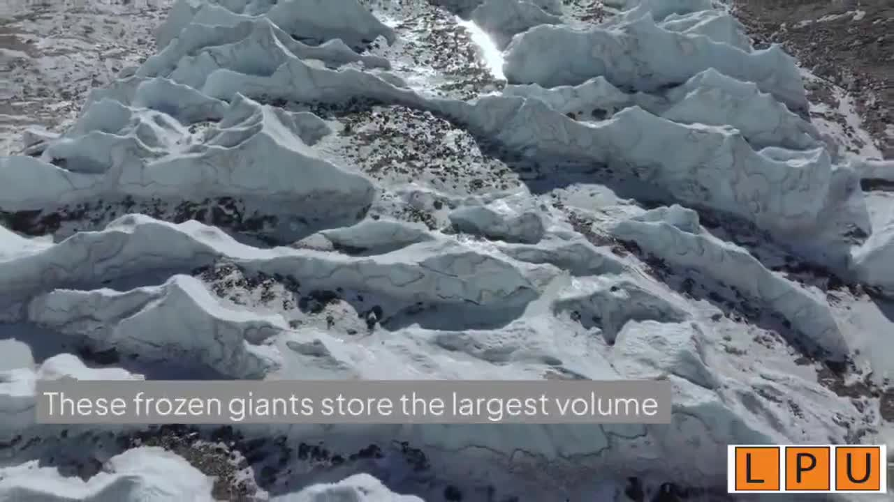
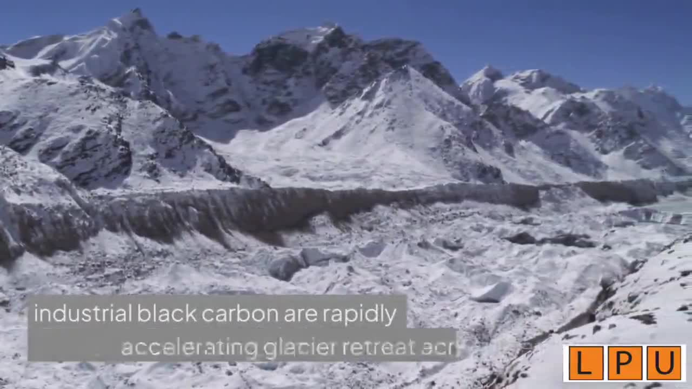
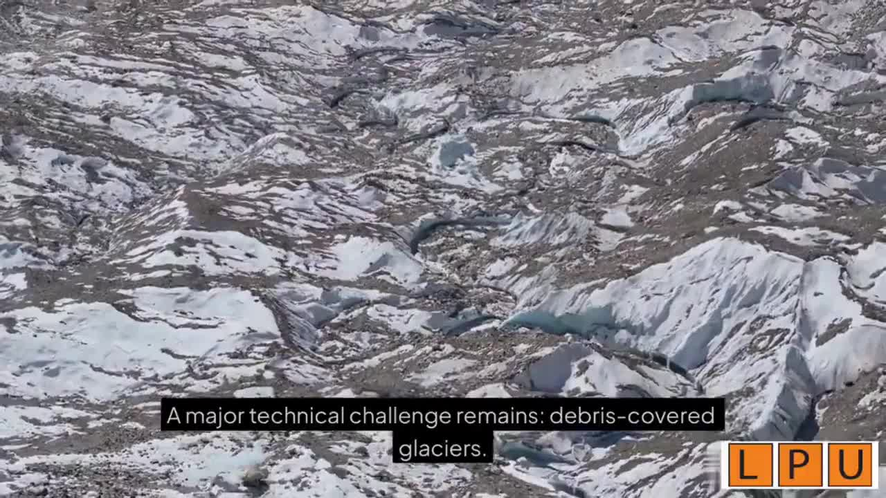
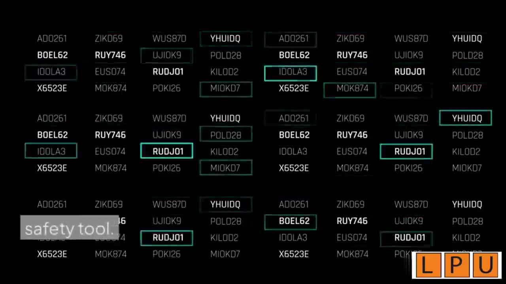
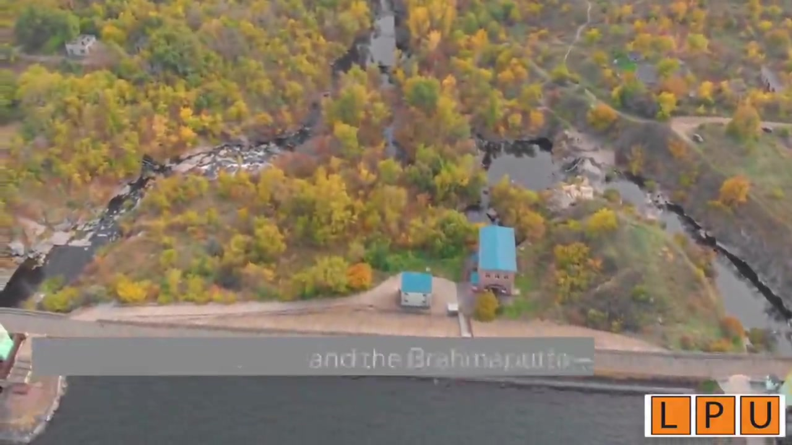
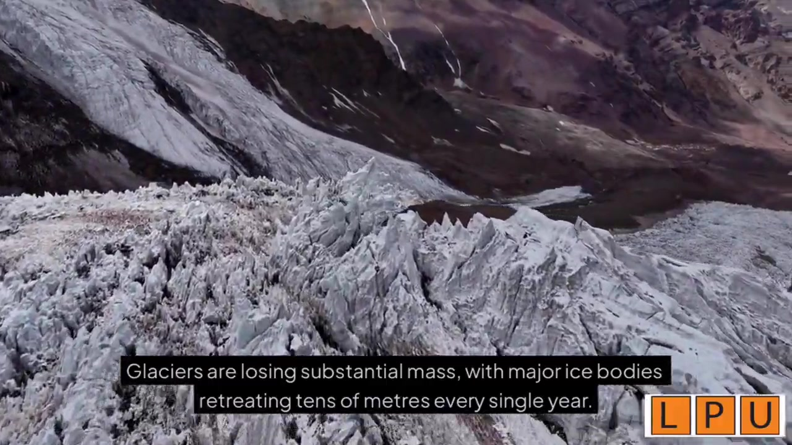
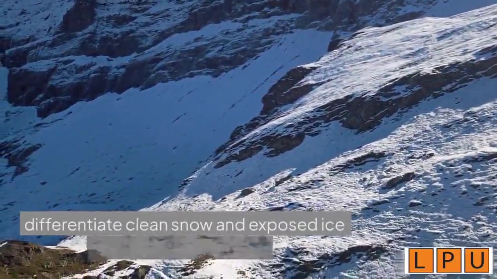
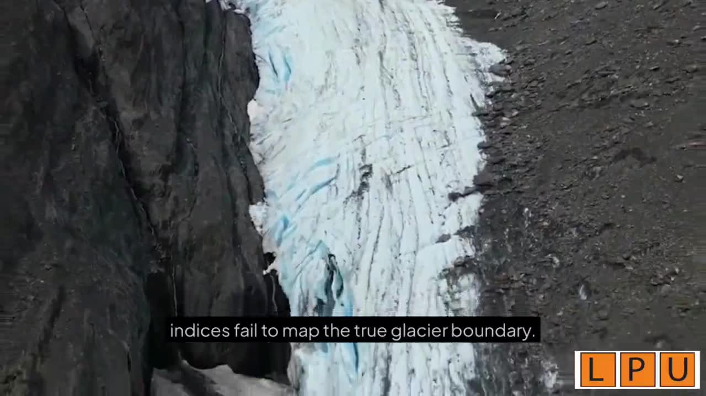

Earth's Third Pole • Vital Water Towers of Asia
How satellites, radar, and machine learning help us track the disappearing ice that sustains nearly one billion people.
High above the Indian subcontinent stands the towering expanse of the Himalayas — the largest store of ice outside the polar caps.
These frozen giants function as the vital water towers of Asia. Every drop of seasonal meltwater feeds critical river basins — the Indus, the Ganga, and the Brahmaputra — sustaining nearly one billion people, driving agricultural productivity across the plains, and powering regional hydropower grids.
This ancient hydrological balance is now fracturing. Rising atmospheric temperatures, shifting monsoon patterns, and the deposition of industrial black carbon are rapidly accelerating glacier retreat across the western, central, and eastern Himalayas.
Tracking these changes from the ground is notoriously difficult: extreme altitudes, treacherous crevasses, and unpredictable weather make manual field glaciology hazardous, sparse, and logistically demanding.

Himalayan glaciers — the frozen water towers of Asia
To monitor such rugged terrain continuously, cryospheric science has shifted to the ultimate vantage point: digital remote sensing from orbit.
Sentinel-2 and Landsat capture multispectral data. Researchers calculate the Normalized Difference Snow Index (NDSI) to differentiate clean snow and exposed ice from surrounding rock.
When heavy monsoon cloud cover persists, Sentinel-1 SAR pierces through dense storm layers, tracking ice velocity and surface movement regardless of weather conditions.
Successive Digital Elevation Models from missions like TanDEM-X and ALOS allow geoscientists to calculate volumetric ice loss with high precision.

Aerial view of a Himalayan glacier showing surface features and melt channels
A major technical challenge remains: debris-covered glaciers. This is where deep learning provides a vital breakthrough.
Multi-satellite observation of glacier surface and elevation change
In the central and eastern Himalayas, rockfall and thick sediments bury large portions of glacier tongues. Because this surface debris shares the same spectral signature as adjacent mountain slopes, standard optical indices fail to map the true glacier boundary.
Digital monitoring is far more than an academic exercise — it is a critical public safety tool.
As glaciers melt and thin, large volumes of meltwater become trapped behind weak, unstable natural moraine dams, forming proglacial lakes.
If a moraine wall breaches due to ice avalanches or hydrostatic pressure, it triggers a catastrophic Glacial Lake Outburst Flood. These sudden deluges can tear down mountain valleys within minutes, destroying downstream bridges, roads, power plants, and villages.
By linking automated satellite feeds with on-site IoT water-level sensors, rapid lake-area expansion can be detected before failure occurs — giving disaster management authorities and local mountain communities the advance warning needed to save lives.

Glacier surface conditions relevant to meltwater storage and risk
High-resolution cryospheric monitoring directly supports key United Nations Sustainable Development Goals.
Safeguarding clean freshwater availability that feeds major Asian river basins serving hundreds of millions.
Driving actionable climate resilience with accurate data for forecasting seasonal irrigation and water budgets.
Protecting sensitive mountain ecosystems and promoting responsible land use and soil/cryosphere conservation.

Conceptual visualisation of data processing and monitoring workflows
Frames from our video on monitoring the Himalayan cryosphere from space.




Two small calculators based on the methods used in satellite monitoring of Himalayan glaciers.
NDSI = (Green − SWIR) / (Green + SWIR). For Sentinel-2 use Band 3 (Green) and Band 11 (SWIR). Values are reflectance from 0 to 1.
Compare a glacier's area in two years to find total loss and average loss per year.
The Himalayas are Earth's Third Pole and the water towers of Asia, supporting nearly one billion people.
Climate change, monsoon shifts, and black carbon are accelerating glacier retreat across the region.
Optical satellites, SAR, and DEM differencing enable continuous, all-weather monitoring from space.
Deep learning (CNNs & U-Net) solves the hard problem of mapping debris-covered glaciers.
Integrated satellite + IoT systems can provide early warning for catastrophic GLOF events.
This work supports SDG 6, 13, and 15 — turning observation into action for a safer future.
Environmental Studies (CHE110) • Lovely Professional University • Section K3P26MH
Member 1
Data collection, research on remote sensing & satellite data, content coordination for optical satellites and SAR.
Member 2
Literature review, machine learning documentation, script & content refinement, SDG alignment, and final review.
Submitted to: Dr. Aditi
They hold the largest store of frozen freshwater outside the Arctic and Antarctica, which is why the region is called the Third Pole.
The terrain is extremely high, steep and crevassed, so regular field visits are risky and expensive. Satellites can cover the same area repeatedly and safely.
The Normalized Difference Snow Index compares green and shortwave infrared reflectance. Snow and ice reflect strongly in green but weakly in SWIR, so a high NDSI (about 0.4 or more) usually means snow or ice.
A Glacial Lake Outburst Flood happens when a lake formed by melting ice suddenly breaks its natural dam and releases a large volume of water downstream.
Regular satellite data can show shrinking glaciers and growing lakes early, so authorities can plan for water supply and issue flood warnings in time.